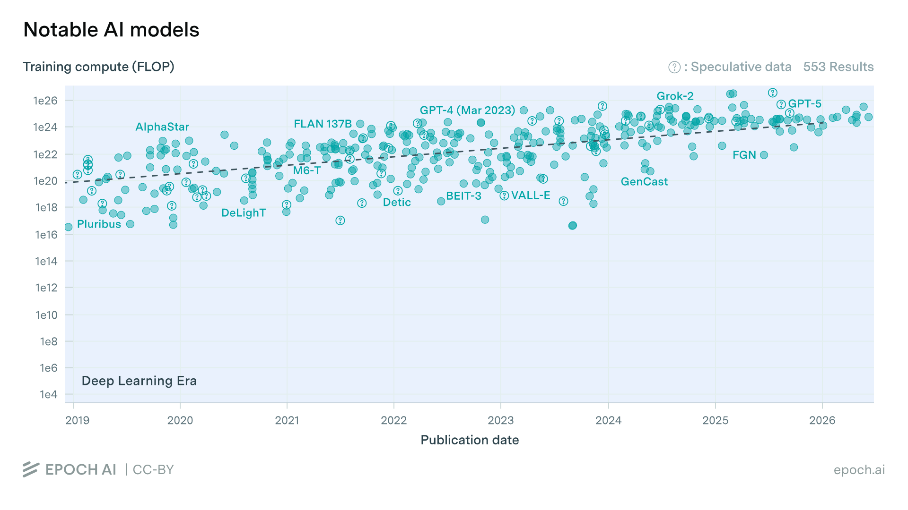
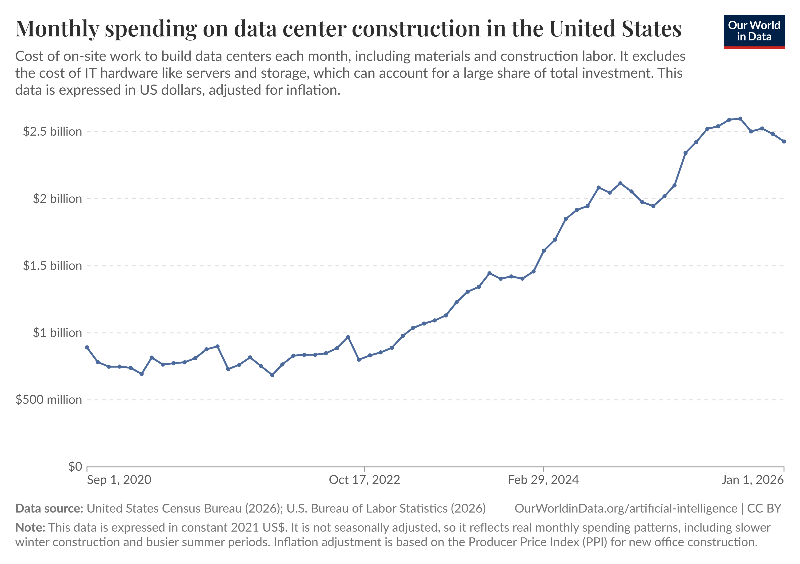

AI 경쟁의 다음 병목
모델 성능에서 산업 실행력과 에너지 효율로 이동하는 2020-2026년 AI 변화와 2030년 전망
AI 경쟁의 다음 병목: 모델 성능에서 산업 실행력과 에너지 효율로
1. 서론: 핵심 축 설정
2020년부터 2026년 6월까지의 인공지능 변화를 관통하는 핵심 축은 AI 경쟁의 중심이 모델 성능에서 산업 실행력과 에너지 효율로 이동하고 있다는 점입니다. 2020년대 초반의 AI 경쟁은 더 큰 모델, 더 많은 데이터, 더 높은 벤치마크 점수를 중심으로 전개되었습니다. 그러나 ChatGPT 이후 AI 사용량이 폭발적으로 증가하면서 경쟁의 질문은 바뀌었습니다. 이제 중요한 것은 “누가 가장 뛰어난 모델을 만들었는가”에 그치지 않습니다. 더 중요한 질문은 “그 모델을 기업 업무와 산업 시스템 안에 얼마나 깊게 내재화할 수 있는가”, 그리고 “그 내재화를 위해 필요한 컴퓨팅과 전력을 얼마나 효율적으로 운영할 수 있는가”입니다.
이 변화의 기술적 뿌리는 Transformer 구조에 있습니다. 2017년 발표된 Attention Is All You Need는 순환 신경망이나 합성곱 구조 없이 attention mechanism만으로 병렬 학습이 가능한 모델 구조를 제시했습니다.1 Transformer는 2020년대 foundation model 확장의 기반이 되었고, 대규모 데이터, GPU, 클라우드 인프라, 막대한 자본이 결합되는 AI 산업 구조를 만들었습니다. 즉 AI는 순수 소프트웨어 기술에서 출발했지만, 2020년대에 들어 대규모 인프라 산업으로 성격이 바뀌기 시작했습니다.
2022년 11월 ChatGPT의 등장은 이 변화를 대중화했습니다. OpenAI는 ChatGPT가 대화 형식으로 후속 질문에 답하고, 실수를 인정하고, 잘못된 전제를 지적할 수 있다고 설명했습니다.2 이후 AI는 연구자나 개발자만의 도구가 아니라 문서 작성, 요약, 코드 작성, 데이터 분석, 기술 검토를 수행하는 일상적 업무 인터페이스가 되었습니다. 2023년 GPT-4는 이미지와 텍스트를 입력으로 처리하는 대규모 멀티모달 모델로 발표되며 범용 모델 경쟁을 한 단계 더 끌어올렸습니다.3
그러나 AI 사용 확산이 곧바로 기업 성과로 연결된 것은 아닙니다. McKinsey의 2025년 글로벌 조사에 따르면 거의 모든 응답 조직이 AI를 사용하고 있지만, 다수는 여전히 실험 또는 파일럿 단계에 머물러 있으며, 전사 EBIT 영향이 있다고 답한 비율은 39%에 그쳤습니다.4 이는 AI 경쟁의 병목이 단순히 모델 성능이 아니라 데이터 정리, 보안, 업무 프로세스 재설계, 사용자 교육, 도메인 전문가의 검증 체계에 있음을 보여줍니다.
따라서 본 보고서는 2020년 이후 AI의 변화를 모델 성능 향상사가 아니라, AI가 산업 현장에 실행 가능한 형태로 들어가고 그 과정에서 발생하는 에너지·인프라 병목을 어떻게 해결할 것인가의 문제로 분석합니다.
2. 기술적 분기점 분석

첫 번째 분기점은 2020년대 초 foundation model 산업화입니다. 기술적 출발점은 Transformer였지만, 과제의 시계열인 2020년 이후 중요한 변화는 이 구조가 대규모 데이터, GPU, 클라우드 인프라와 결합해 범용 foundation model 경쟁으로 산업화되었다는 점입니다. 과거 AI 모델은 특정 문제를 해결하는 좁은 시스템에 가까웠습니다. 그러나 Transformer 기반 모델은 하나의 모델이 언어 이해, 생성, 요약, 번역, 코드 작성 등 다양한 업무에 적용될 수 있음을 보여주었습니다.
이 변화가 가능했던 이유는 세 가지입니다. 첫째, attention 기반 구조가 대규모 병렬 학습에 적합했습니다. 둘째, GPU와 클라우드 인프라가 대규모 학습을 가능하게 했습니다. 셋째, 인터넷 규모의 데이터와 자본이 AI 모델 확장을 뒷받침했습니다. 시장의 질서도 바뀌었습니다. AI 경쟁은 알고리즘 연구 경쟁에서 데이터, GPU, 클라우드, 전력, 자본을 결합한 인프라 경쟁으로 이동했습니다. 이 분기점이 남긴 과제는 비용과 에너지입니다. 더 큰 모델은 더 높은 성능을 제공했지만, 동시에 더 많은 학습 비용, 추론 비용, 데이터센터 전력 수요를 만들었습니다.
두 번째 분기점은 2022년 ChatGPT 출시와 2023년 GPT-4를 통한 AI 인터페이스의 대중화입니다. ChatGPT는 AI를 API나 연구실 기술에서 자연어 대화형 업무 도구로 바꾸었습니다.2 사용자는 복잡한 프로그래밍 없이도 문서 요약, 코드 작성, 데이터 분석, 아이디어 정리를 수행할 수 있게 되었습니다. GPT-4는 멀티모달 입력과 높은 벤치마크 성능을 통해 범용 모델이 더 넓은 업무 영역으로 확장될 수 있음을 보여주었습니다.3
이 사건의 시장 파장은 컸습니다. 기업들은 생성형 AI를 고객 응대, 마케팅, 문서 작성, 소프트웨어 개발, 데이터 분석, 지식 관리에 적용하기 시작했습니다. 그러나 이 분기점은 새로운 한계를 드러냈습니다. AI를 누구나 쓸 수 있게 되었지만, 기업의 핵심 데이터는 보안과 권한 문제로 외부 모델에 쉽게 넣기 어렵습니다. 또한 AI 결과는 실제 업무 책임을 지는 사람이 검증해야 합니다. 따라서 다음 경쟁은 단순 사용 확산이 아니라 기업 내부 업무 흐름에 AI를 안전하게 내재화하는 경쟁으로 넘어갔습니다.
세 번째 분기점은 2025~2026년 frontier AI의 전략자산화와 에너지 병목의 가시화입니다. Anthropic은 2025년 6월 미국 국가안보 고객을 위한 Claude Gov 모델을 발표하며, 해당 모델이 classified environment에서 운영되는 고객에게 제한적으로 제공된다고 밝혔습니다.5 2026년 6월에는 미국 정부가 국가안보 권한을 근거로 Fable 5와 Mythos 5에 대한 외국인 접근 중단 지시를 내렸다고 Anthropic이 공식 발표했습니다.6 이는 고성능 AI 모델이 일반 SaaS 상품이 아니라 국가안보, 수출통제, 사이버 보안과 연결된 전략자산이 되었음을 보여줍니다.
동시에 AI 사용 확산은 데이터센터 전력 수요를 구조적 이슈로 만들었습니다. IEA는 2024년 전 세계 데이터센터 전력 소비를 약 415TWh, 세계 전력 소비의 약 1.5%로 추정했고, 2030년에는 약 945TWh로 두 배 이상 증가할 수 있다고 전망했습니다.7 이 세 번째 분기점은 앞의 두 분기점과 연결됩니다. Transformer 기반 확장은 대규모 모델을 가능하게 했고, ChatGPT는 사용량을 폭발시켰으며, frontier AI의 전략자산화와 데이터센터 전력 수요 증가는 AI 경쟁이 소프트웨어 경쟁을 넘어 인프라·안보·에너지 경쟁으로 이동했음을 보여줍니다.
3. 산업 적용 사례 분석: 에너지 및 데이터센터 인프라 산업

본 보고서가 선택한 산업은 에너지 및 데이터센터 인프라 산업입니다. 이 산업은 AI 변화의 양면성을 가장 잘 보여줍니다. 한편으로 AI는 에너지 효율을 높이는 도구입니다. 다른 한편으로 AI 확산은 데이터센터와 전력망에 새로운 부담을 만듭니다. 따라서 이 산업에서는 AI의 비즈니스 가치와 인프라 비용이 동시에 드러납니다.
데이터센터는 AI 시대의 핵심 가치사슬에 위치합니다. 과거 데이터센터는 IT 서비스를 위한 후방 인프라로 인식되었습니다. 그러나 생성형 AI 확산 이후 데이터센터는 모델 학습, 추론, 클라우드 서비스, 기업 AI 애플리케이션을 떠받치는 미션 크리티컬 인프라가 되었습니다. 가치사슬도 바뀌었습니다. AI 서비스의 경쟁력은 모델 개발자만이 아니라 GPU 공급, 전력 인입, 냉각, UPS, 배전, 운영 자동화, 에너지 관리, 데이터센터 입지 선정 능력과 연결됩니다.
Google DeepMind의 데이터센터 냉각 사례는 AI가 산업 시스템의 운영 효율을 개선할 수 있음을 보여줍니다. Google DeepMind는 머신러닝을 데이터센터 냉각 시스템에 적용해 냉각 에너지를 최대 40% 줄이고, 전체 PUE overhead도 15% 낮췄다고 발표했습니다.9 이는 AI가 문서 작성이나 챗봇을 넘어, 센서·전력·냉각 장치가 얽힌 복잡한 물리 시스템의 효율을 개선할 수 있음을 보여주는 사례입니다.
Siemens가 데이터센터를 효율성, 회복탄력성, 지속가능성을 갖춘 핵심 인프라로 보는 것도 같은 맥락입니다.8 AI 시대 데이터센터는 단순 전산실이 아니라 전력, 냉각, 자동화, 디지털 트윈, 에너지 관리가 결합된 산업 시스템입니다. 따라서 이 산업에서 AI의 비즈니스 모델 변화는 두 방향으로 나타납니다. 첫째, AI 서비스 수요가 데이터센터 투자를 확대합니다. 둘째, 데이터센터 자체도 AI를 활용해 냉각, 전력, 설비 운영을 최적화합니다. 결국 AI는 데이터센터의 수요를 만드는 원인이면서, 데이터센터 운영 효율을 높이는 도구이기도 합니다.
이 사례는 에너지·제조·건설·엔지니어링 업무에도 적용됩니다. AI는 사람의 최종 판단을 대체하기보다, 판단 전에 필요한 자료 탐색, 비교, 요약, 코드 작성, 데이터 분석, 시뮬레이션 보조를 줄입니다. 그러나 그 효율을 대규모로 얻으려면 기업은 더 많은 추론, 서버, 데이터센터, 전력을 사용해야 합니다. 따라서 산업 적용의 핵심은 업무 효율과 인프라 효율의 동시 관리입니다.
4. 두 세계관의 비교
AI의 미래는 크게 두 가지 패러다임으로 나뉩니다. 첫 번째는 대규모 범용 모델입니다. 이는 GPT-4처럼 다양한 입력과 업무를 하나의 모델에서 처리하려는 방향입니다. 강점은 범용성입니다. 하나의 모델이 문서 작성, 번역, 코드 작성, 데이터 분석, 이미지 이해, 추론을 지원할 수 있습니다. OpenAI는 GPT-4가 이미지와 텍스트 입력을 처리하는 대규모 멀티모달 모델이며 여러 전문·학술 벤치마크에서 높은 성능을 보였다고 설명했습니다.3
두 번째는 경량 특화 모델 및 온디바이스 AI입니다. 이 방향은 모든 문제를 하나의 거대 모델로 해결하기보다, 특정 산업과 업무에 맞는 모델을 내부망, 온프레미스, 엣지 장비, 현장 시스템에 적용합니다. 범용성은 낮지만 비용, 보안, 에너지 효율 측면에서 유리할 수 있습니다.
| 비교 축 | 대규모 범용 모델 | 경량 특화 모델 및 온디바이스 AI |
|---|---|---|
| 성능의 범용성 | 다양한 업무와 입력을 처리하는 범용성이 강합니다. | 특정 업무에서는 강하지만 범용성은 낮습니다. |
| 비용 | 학습과 추론 모두 고비용이며, 대규모 GPU와 데이터센터가 필요합니다. | 상대적으로 저비용이며, 특정 업무 반복 처리에 유리합니다. |
| 개인정보보호 | 외부 클라우드 사용 시 내부 데이터 유출 우려가 있습니다. | 내부망, 온프레미스, 엣지 환경에 적합합니다. |
| 생태계 확장성 | API, 클라우드, 개발자 생태계를 통해 빠르게 확장됩니다. | 산업별 커스터마이징이 필요해 확산 속도는 느릴 수 있습니다. |
| 에너지 효율 | 사용량 증가 시 전력·냉각 부담이 확대됩니다. | 특정 업무를 낮은 전력으로 처리할 수 있습니다. |
따라서 두 세계관의 대립은 단순히 “어느 모델이 더 똑똑한가”가 아닙니다. 핵심 질문은 어떤 방식이 더 낮은 비용과 전력으로 더 많은 산업 가치를 반복적으로 만들 수 있는가입니다. 범용 모델은 AI의 기반 인프라로 남겠지만, 기업의 실제 성과는 경량 특화 모델, 내부 지식관리, 보안 가능한 AI workflow와 결합될 때 더 크게 나타날 가능성이 높습니다.
5. 한국의 전략적 선택
한국의 전략적 위치는 세 축에서 볼 수 있습니다. 첫째, 데이터 측면에서 한국은 초거대 범용 모델 학습에 필요한 글로벌 규모의 공개 데이터와 플랫폼 생태계에서는 미국보다 불리합니다. 그러나 제조, 반도체, 배터리, 조선, 자동차, 건설, 에너지 분야의 산업 데이터와 현장 운영 데이터는 강점입니다. 이 데이터는 외부 인터넷 데이터보다 작지만, 실제 산업 성과와 직접 연결되는 고가치 데이터입니다.
둘째, 반도체 측면에서 한국은 메모리와 제조 공급망에서 강점이 있습니다. AI 경쟁이 GPU, HBM, 서버, 냉각, 데이터센터 전력 효율로 확장될수록 반도체와 인프라 역량은 중요해집니다. 그러나 범용 AI 플랫폼, 클라우드 운영, 글로벌 개발자 생태계에서는 아직 약점이 있습니다. 따라서 한국은 미국식 초거대 모델 플랫폼 경쟁을 그대로 따라가기보다, 반도체·제조·에너지 효율을 결합한 산업 AI 인프라 전략을 세워야 합니다.
셋째, 인력 측면에서 한국은 AI 원천 모델 연구 인력 규모에서는 미국과 격차가 있지만, 제조·에너지·건설·엔지니어링 도메인 전문가를 보유하고 있습니다. AI가 실제 가치를 만들려면 모델만이 아니라 현장 데이터의 의미를 해석하고 결과를 검증할 사람이 필요합니다. 이 점에서 한국의 기회는 도메인 인력을 대체하는 AI가 아니라 도메인 인력을 증강하는 AI에 있습니다.
따라서 한국이 집중해야 할 전략적 방향은 경량 특화·산업 내재형 AI입니다. 이는 초거대 범용 모델을 포기하자는 뜻이 아닙니다. 범용 모델은 기반 도구로 활용하되, 한국의 경쟁우위는 산업 데이터, 반도체 제조 역량, 현장 도메인 인력을 결합해 제조·에너지·건설·엔지니어링 업무에 특화된 AI를 만드는 데 있습니다.
구체적으로 한국 기업은 내부망 기반 AI, 특화 모델, 데이터 표준화, 권한 관리, AI 리터러시 교육을 함께 추진해야 합니다. 회사 내부 데이터가 PDF, Excel, 이메일, 부서별 시스템에 흩어져 있으면 AI 도입 효과는 제한됩니다. 결국 한국의 전략은 모델 크기를 키우는 경쟁이 아니라, 산업 현장의 운영 효율과 AI 인프라의 에너지 효율을 동시에 높이는 경쟁이어야 합니다.
6. 결론 및 2030년 미래 전망

2030년 AI 시장의 핵심 변수는 모델 성능뿐 아니라 그 성능을 유지하기 위해 필요한 전력, 데이터센터, 냉각, 반도체 효율, 산업 내재화 능력입니다. IEA는 데이터센터 전력 소비가 2024년 약 415TWh에서 2030년 약 945TWh로 증가할 수 있다고 전망합니다.7 이는 AI가 더 넓게 쓰일수록 컴퓨팅과 전력 수요가 함께 증가한다는 점을 보여줍니다.
첫 번째는 대규모 범용 모델 주도 시나리오입니다. 이 경우 OpenAI, Google, Anthropic, Microsoft, NVIDIA 같은 기업이 모델과 클라우드 인프라를 장악하고, 대부분의 기업은 이들의 API 위에서 업무 애플리케이션을 개발합니다. 이 시나리오에서는 모델 성능, GPU 확보, 데이터센터 규모, 글로벌 서비스 배포 능력이 승부를 가릅니다. 실현 가능성은 40%로 봅니다. 범용 모델의 편의성과 생태계 장악력이 매우 크기 때문입니다. 그러나 보안, 비용, 전력, 국가별 접근 제한은 이 시나리오의 제약입니다.
두 번째는 경량 특화·산업 내재형 AI 주도 시나리오입니다. 이 경우 범용 모델은 기반 인프라로 남지만, 실제 기업 성과는 각 산업의 업무 흐름에 내재화된 특화 AI에서 나옵니다. 제조, 에너지, 건설, 금융, 의료, 공공 부문은 외부 범용 모델을 참고하되, 핵심 데이터는 내부망과 특화 모델로 운영합니다. 이 시나리오에서는 산업 데이터, 도메인 전문가, 보안 가능한 AI 인프라, 저전력 반도체, 데이터센터 에너지 효율이 중요해집니다. 실현 가능성은 60%로 봅니다. 기업의 실제 성과는 범용 챗봇 사용보다 업무 프로세스 재설계와 내부 데이터 활용에서 나올 가능성이 더 크기 때문입니다.
이 전망에서 중요한 점은 AI가 에너지를 소비하는 기술인 동시에 에너지 효율을 개선하는 기술이라는 점입니다. Google DeepMind의 데이터센터 냉각 사례는 AI가 물리적 에너지 시스템 최적화에 기여할 수 있음을 보여줍니다.9 그러나 AI 사용량이 늘어날수록 데이터센터와 전력망 부담도 커집니다. 따라서 2030년의 승자는 가장 큰 모델을 가진 기업만이 아니라, 모델 성능, 산업 데이터, 도메인 전문가, 보안, 전력 효율, 업무 프로세스를 하나의 운영체계로 묶는 기업과 국가가 될 것입니다.
한국은 미국식 초거대 모델 패권 경쟁을 정면 추격하기보다, 제조·에너지·건설 현장의 도메인 인력을 증강하고 산업 효율과 에너지 효율을 동시에 높이는 특화 AI 전략에 집중해야 합니다. AI는 에너지를 많이 쓰는 기술이지만, 동시에 에너지 시스템을 최적화하는 기술이기도 합니다. 2030년 AI 경쟁의 승자는 모델 성능과 에너지 효율을 동시에 확보한 쪽이 될 것입니다.
참고자료
- Vaswani et al., “Attention Is All You Need,” NeurIPS, 2017.
- OpenAI, “Introducing ChatGPT,” 2022.
- OpenAI, “GPT-4,” 2023.
- McKinsey, “The State of AI in 2025: Agents, innovation, and transformation,” 2025.
- Anthropic, “Claude Gov models for U.S. national security customers,” 2025.
- Anthropic, “Statement on the US government directive to suspend access to Fable 5 and Mythos 5,” 2026.
- IEA, “Energy demand from AI,” Energy and AI, 2025.
- Siemens, “Data Center Solutions,” official Siemens page.
- Google DeepMind, “DeepMind AI Reduces Google Data Centre Cooling Bill by 40%,” 2016.